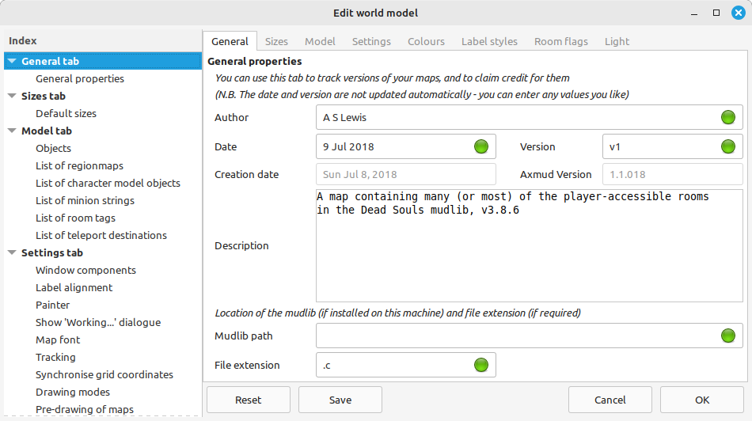
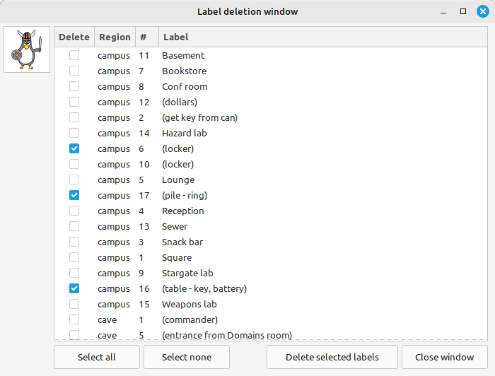

Previous Index Next
Tutorial 3: Sharing your maps
Table of Contents
After spending weeks crafting a comprehensive map of your favourite MUD, you're probably thinking about sharing that map with other players.
Here's a handy checklist of things to do. Of course, these are only suggestions; apply them, or don't. It's up to you!
There are two version of the map - the original, private version that you want to keep for yourself, and a public version that you're going to send to other people.
The first step is to make a copy of the private version, so you can restore it after you've released the public version.
- From the automapper window menu, select File > Save/export world model...
- Save the file somewhere convenient, for example on your desktop
- It's probably a good idea to name the file something like private.tar.gz, so you don't get the private and public versions mixed up
- Now you're ready to edit the public version of your map
Everyone should know who's responsible for their beautiful new map. This is how to claim credit for it.
- From the automapper window menu, select Edit > Edit world model...
- The edit window opens on the General tab
- You should add your name here
- If it's useful, you can also add a version number, and a date for the version
- Those boxes - as well as the Description box - can contain any text you like
- Click the OK button to confirm your changes

There are a few things you can do to make life easier for the people who use your maps. The first one is to set which part of the map is initially visible, and how much of the map is visible.
- From the automapper window menu, select View > Reposition all maps
- If you want to make a different part of a region visible, you can do so. That information is saved along with everything else, when you save the map
Axmud scrolls the map around so that the current room is always visible. If you've change the tracking settings, you should restore the default values.
- From the automapper window menu, make sure View > Tracking > Track current room is selected
- Then select View > Tracking > Track near edge
Another common courtesy is to turn on tooltips, if you've turned them off
- From the automapper window menu, select Mode > Drawing flags > Show tooltips
- Then select Mode > Drawing flags > Show room notes in tooltips
While you're at it, the default setting is not to open the automapper window automatically.
- From the automapper window menu, de-select Mode > Start-up flags >Open automapper on startup
Axmud records how many visits your characters have made to each room. Other players are not interested in where your characters have been, so you should probably remove this information.
- From the automapper window menu, select Edit > Reset > Reset visits by character...
- In the dialogue window, select All character profiles
- Just below that, select All regions
- Click OK to confirm your changes
You should reset the way rooms are displayed, if you've changed those settings.
- From the automapper window menu, make sure that View > Room filters > Release all filters is selected
- Then, make sure that View > Room interiors > Don't draw counts is selected
Auto-compare mode, auto-rescue mode and auto-slide mode are really useful, but other users should be able to choose whether they're turned on, or not. We advise that they are all turned off.
- From the automapper window menu, make sure that Mode > Auto-compare > Don't auto-compare current room is selected
- Then, make sure that Mode > Auto-rescue mode > Enable auto-rescue mode is not selected
- Then, make sure that Mode > Auto-slide mode > Don't auto-slide new rooms is selected
Assisted moves allow you to move through exits like enter portal by typing a command like north or n (assuming that the exit has been drawn as a north exit).
- From the automapper window menu, make sure that Mode > Movement flags > Allow assisted moves is selected
- Then, make sure that Mode > Movement flags > Allow protected moves is not selected
- Also make sure that Mode > Movement flags > Allow crafty moves is not selected
If other users might want to add their own rooms to their imported map, you should consider resetting the options that specify how two-way exits are drawn.
- From the automapper window menu, make sure that Exits > Exit options > Autocomplete uncertain exits is not selected
- Make sure that Exits > Exit options > Intelligent uncertain exits is selected
- Make sure that Exits > Exit options > Collect checked directions is not selected
If you've filled your map with quest hints that you don't want to share, there's a quick and easy way to delete them all (while keeping the labels that you do want to share).
- From the automapper window menu, select Labels > Quick label deletion...
- In the new window, click the box next to every label that you want to delete
- When you're ready, click the Delete selected labels button
- Then click the OK button to close the window

Now you're ready to share your map.
- From the automapper window menu, select File > Save/export world model...
- Save the file somewhere convenient, for example on your desktop
- Give the file a sensible name, for example public-deathmud-map.tar.gz
- Send this file to your friends!
Your friends probably already know how to import the file they've received. If not, you can send them this:
- The usual advice applies: don't import things from people you don't trust
- From the automapper window menu, select File > Import/load world model...
- Select the .tar.gz file you received
- When Axmud warns you about overwriting your existing map, select Yes
- If you don't want to overwrite your existing map, you can merge the two maps instead. From the automapper window menu, click File > Merge world models...
The final step, of course, is to restore the private map you exported earlier.
- From the automapper window menu, select File > Import/load world model...
- Select the private.tar.gz file you exported and saved on your desktop
Previous Index Next